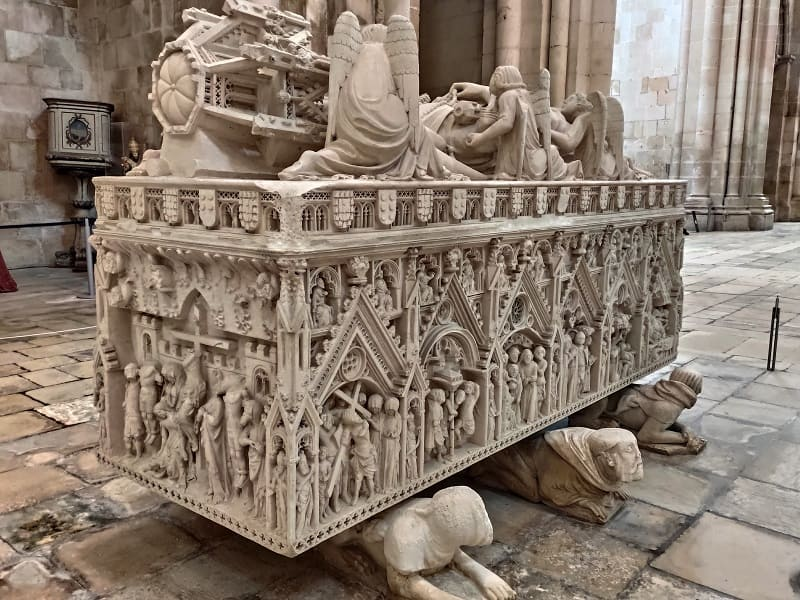
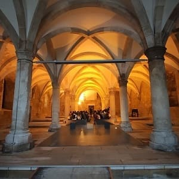
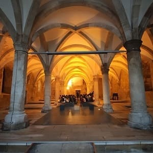
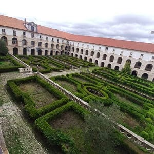

The start of the first day was all driving and I would not see anything, leaving Badajoz for the next day. Badajoz is the capital of the province and the most populous city in the entire autonomous community, however, despite being a city with a large monumental load, it is little known because other nearby cities and towns such as Mérida, Cáceres or Trujillo have much more monuments from different eras.
Badajoz stands out above all for its remains from the Islamic era, such as the great wall that surrounds the old Alcazaba. In Arabic it was called Batalyaws and was founded by Abd-al Rahman Ibn Marwan, in the year 875, when the Emir of Cordoba, Muhammad I, reigned over a previous Visigothic settlement. It was built on the hill of La Muela and covered a large space.
The Alcazaba of Badajoz (from Arabic: al-qaṣbah, قصبة, al kasbah, 'citadel') is a Muslim fortification (9th-13th centuries), late medieval Christian castle (13th-16th centuries) and as part of the citadel and fortification of modern building (17th-19th centuries), located in the Spanish city of Badajoz. On it you can see a large part of the city as seen in the image, which in this case overlooks the Plaza de la Ermita, heading southwest.
 The citadel-castle of Badajoz is the largest citadel in Europe, (in terms of its construction from the Muslim period), and one of the largest in the world in its genre and period, in terms of its perimeter refers (8 hectares and about 1300 meters of preserved wall canvas), although its extension became much greater with the so-called "Cerca Vieja" (of which important vestiges still survive), which includes, approximately, the entire enclosure bastion of later construction, with dimensions of 6000 meters and more than 50 hectares, which make it one of the largest among those built by the Arabs in the past (along with cities such as Granada). It has about 12 towers, some of them more recent, ranging from the 9th to the 12th century, the most important being the Espantaperros from the 12th century of the Almohad period with an octagonal floor plan.
The citadel-castle of Badajoz is the largest citadel in Europe, (in terms of its construction from the Muslim period), and one of the largest in the world in its genre and period, in terms of its perimeter refers (8 hectares and about 1300 meters of preserved wall canvas), although its extension became much greater with the so-called "Cerca Vieja" (of which important vestiges still survive), which includes, approximately, the entire enclosure bastion of later construction, with dimensions of 6000 meters and more than 50 hectares, which make it one of the largest among those built by the Arabs in the past (along with cities such as Granada). It has about 12 towers, some of them more recent, ranging from the 9th to the 12th century, the most important being the Espantaperros from the 12th century of the Almohad period with an octagonal floor plan.


 The site houses the Provincial Archaeological Museum in the Palace of the Dukes of La Roca, which can be seen in the two images above. The buildings shown inside are good proof of the different functions that the enclosure had at different times: Islamic citadel (9th-13th centuries), late medieval Christian castle (13th-16th centuries) and as part of the citadel and fortification of modern building (17th-19th centuries). The Museum stands out for its Roman and Visigoth remains.
The site houses the Provincial Archaeological Museum in the Palace of the Dukes of La Roca, which can be seen in the two images above. The buildings shown inside are good proof of the different functions that the enclosure had at different times: Islamic citadel (9th-13th centuries), late medieval Christian castle (13th-16th centuries) and as part of the citadel and fortification of modern building (17th-19th centuries). The Museum stands out for its Roman and Visigoth remains.
Inside there is a church that was formerly the Cathedral of Badajoz called Cathedral of Our Lady of the Bishop or Santa María del Castillo. Together with some archaeological remains, it is what remains of the primitive Cathedral of Badajoz (Mosque-Cathedral), erected on an old Arab mosque after the Christian conquest of 1230.
In addition, due to its proximity to Portugal, bastions were built (see map of the city), an outer wall like its neighbors Olivenza and Elvas. With its corresponding doors in its walls, standing out and preserved until today the Puerta de Palmas next to the bridge of the same name.
As places of interest we could highlight some squares such as the Plaza Alta where the red houses are, an old square with restored houses that give a modern touch to that area. In the image above you can see the square.
Another square is Plaza de España where the town hall and the cathedral are in the image below. This cathedral would be built due to the importance of the city in the 13th century after the reconquest. It would be built on a Mozarabic temple that was outside the city. Everything that was not close to the Alcazaba was on the outskirts, and besides, the city did not extend even a quarter of what it is today.
The Cathedral of San Juan Bautista has the external appearance of a castle or fortress with very large walls. Inside the Cathedral of Badajoz we can see three naves and as many apses, highlighting its High Altar, its numerous chapels and especially its cloister with its pointed arches and which was built in the 16th century. It is worth more than other cathedrals in the south, although it is a very modest cathedral, and except for the fact that it brings together everything architecturally to be a cathedral, it could well be a co-cathedral or a collegiate church. Remember that Extremadura has 3 cathedrals, Badajoz, Coria and Plasencia and 2 great monasteries, a World Heritage Site, such as Yuste and Guadalupe. I had already seen all these places on previous trips and I only had this one left.


 It also preserves old gates such as Las Palmas and religious buildings of interest such as the Convent of San Jose and Santa Ana. It also has significant modernist buildings, some outstanding buildings such as the Jiralda, a tall neoclassical building. The last important square is Plaza de San Francisco with the church of San Juan Bautista and the church of Santo Domingo in its vicinity.
It also preserves old gates such as Las Palmas and religious buildings of interest such as the Convent of San Jose and Santa Ana. It also has significant modernist buildings, some outstanding buildings such as the Jiralda, a tall neoclassical building. The last important square is Plaza de San Francisco with the church of San Juan Bautista and the church of Santo Domingo in its vicinity.


After visiting Badajoz, I would head south towards Olivenza. Olivenza has been the subject of dispute for centuries between Spain and Portugal. Being the Guadiana river the natural border between the two nations, the cities that were facing each other were Olivenza and Elvas. Both have large walls, however, Elvas, apart from the bastions, has two modern fortifications that make it impregnable until the invention of aviation.
Olivenza was also very important in the reconquest against the Arabs, and has a very successful wall. The Alconchel gate gives access to the historic center where we will find the most important monuments the castle and the church of Santa Maria del Castillo as well as the most important church of Santa María Magdalena.
The castle was built by the Order of the Temple to which Alfonso IX ceded the village as payment for his help in the conquest of the Taifa of Badajoz. After passing into Portuguese hands, Don Dinís walled it in 1298. Later, in 1488, Don Joao ordered the erection of the homage tower, which turned out to be the tallest in Portugal. After passing through Portuguese, Spanish and French hands, Olivenza has belonged to the Kingdom of Spain since 1801. It was badly damaged during the War of Independence and due to subsequent abandonment. The church of Santa María del Castillo, is located inside the Castle of Olivenza and gave its name to one of the old districts of this city, the village of Santa María del Castillo. It was initially built in the 13th century, later having to be rebuilt in the 16th century. Today this castle houses the city's ethnographic museum with popular cultures and traditions.
The most outstanding church is the church of Santa María Magdalena which imitates the religious Portuguese style, the manualino, with helicoidal columns that seem to twist on themselves.


 Walking with the car about 30 kms I will arrive at Elvas. Being very close to Spain, one might think that there are hardly any changes, but this city is very integrated and linked to Portugal and the change is absolute. Although a part of its inhabitants understands Spanish perfectly. As I have said before, this city is important for its fortifications, although it has a historic center and a couple of religious buildings that are worth visiting. One is the Iglesia de la Asunción, very similar to the churches seen in Olivenza, located in the Plaza Mayor, in Manueline style.
Walking with the car about 30 kms I will arrive at Elvas. Being very close to Spain, one might think that there are hardly any changes, but this city is very integrated and linked to Portugal and the change is absolute. Although a part of its inhabitants understands Spanish perfectly. As I have said before, this city is important for its fortifications, although it has a historic center and a couple of religious buildings that are worth visiting. One is the Iglesia de la Asunción, very similar to the churches seen in Olivenza, located in the Plaza Mayor, in Manueline style.


In the morning the first thing I visited was the neighborhood of Almada, to take photos of the Lisbon bridge and see a panoramic view of the city since my hostel was very close. The cost of hostels and hotels is much cheaper on the other side of the river and if you want to visit the towns south of Lisbon it is worth it. In addition, the beaches in this area and nightlife are better when my hostel is in Caparica. you can see in detail the Christ the King of Lisbon. To visit in this neighborhood we have the house of the fence that has a museum inside, and some of its streets.


 Después puse rumbo a Lisbon aparcando muy cerca del puente ya que justo este y la carretera limitan la zona libre de polución de la ciudad entre este y oeste. Primente visite el oeste de la ciudad estando los monumentos más importantes al oeste pero el casco histórico y la mayoría de cosas que ver al este.
Después puse rumbo a Lisbon aparcando muy cerca del puente ya que justo este y la carretera limitan la zona libre de polución de la ciudad entre este y oeste. Primente visite el oeste de la ciudad estando los monumentos más importantes al oeste pero el casco histórico y la mayoría de cosas que ver al este.
In the west, the first thing you would see would be the Chapel of Santo Amaro, very close to where you parked your car. Following the street along the river, you would see different palatial houses, reaching the end of the Palace of the President of the Republic, which cannot be visited, but the President's Museum. Highlights the statue of Alfonso de Albuquerque which is the meeting place for many guides who begin to show the city from this point.
Nearby is the most famous and visited monument in all of Portugal, the Jerónimos monastery whose church is, from my point of view, the most beautiful in Portugal.
In importance it would also be above the monastery of Tomar, being large and occupying something less than its monastery. This monastery has two large cloisters whose entrance fee, 10 euros, seems excessive to me since the visit to the church is free. In addition, the reduced ticket is difficult to obtain since teachers or students ask for a certified sheet that they come to Lisbon for studies. You can also visit the archaeological museum also attached to the monastery and the Navy museum.
It was designed in the Manueline style by the architect Juan de Castillo, it was commissioned by King Manuel I of Portugal to commemorate Vasco de Gama's fortunate return from India. It was founded in 1501 on the Ermida do Restelo enclave on what was Restelo beach, a hermitage founded by Enrique the Navigator, and in which Vasco da Gama and his men spent the night in prayer before leaving for India. . The first construction stage of the new church began in 1514 and was extended and modified until the 20th century.


Having a day to make the most of Lisbon, I wouldn't visit these museums and went straight to see the Belem Tower by the sea. Also the monument to those fallen in combat.
Then he would go north to the palace of Aduja. Admission is not expensive, being €5 and reduced €2.5. This palace has many important rooms such as the dining room where the kings of the 19th century have held some celebrations and the throne room. This palace was ordered to be built in the last years of the monarchy and its restoration is scheduled to finish in 2030. When I went, it is true that there were objects that were moving but almost all the rooms were complete. Both for the number of rooms and for the quality and details, the interior is much more valuable than any other palace in Portugal, including those in Sintra.

 After the visit, I would go to eat at a restaurant near the city bridge and then take a bus to the historic center.
After the visit, I would go to eat at a restaurant near the city bridge and then take a bus to the historic center.


The first town to visit would be Palmela. The most remarkable thing about this town is its castle, although the church of San Pedro is very beautiful. With its tiles on the walls and its paintings on the ceiling, it follows the line of many Portuguese churches in the area.


 The castle of Palmela is a large walled fortress that supported the castle of San Jorge. In it you could make signs in case you needed help and you could see a large line of towns from that height, being a special place to take panoramic photos of the area. Also inside there are the ruins of an old church before erecting another church that is inside. Possibly that church was prior to the castle.
The castle of Palmela is a large walled fortress that supported the castle of San Jorge. In it you could make signs in case you needed help and you could see a large line of towns from that height, being a special place to take panoramic photos of the area. Also inside there are the ruins of an old church before erecting another church that is inside. Possibly that church was prior to the castle.
It was originally built by the Arabs and had a defensive role as a citadel between the 8th and 9th centuries, later greatly enlarged between the 10th and 12th centuries once the city was reconquered by the Christians.
The castle, at a height of 240 meters above sea level, has an irregular, organic polygonal floor plan (adapted to the terrain), with the walls reinforced by square and circular towers.
The evolution of the defensive perimeter of Palmela can be understood by studying these walls, arranged in three levels of fences, without moats, separated by successive barriers:
 Palmela Castle: Gothic interior of the Church of Santiago de Palmela (15th century).
the internal line, dates back to the twelfth and thirteenth centuries, includes the oldest wall, protected by two cylindrical towers and the homage tower, in which a cistern opens. This would have been remodeled in the fourteenth century, its structure reinforced and its height increased, crowned with battlements. Inside, a stone staircase joins the various floors.
the intermediate line, erected in the 15th century, is made up of more robust walls, where the main square, the Church of Santa María (erected in the 12th century and rebuilt in the Renaissance), the Convent and the Church of Santiago of Palmela, fourteenth-century Gothic works.
the outer line, built in the 17th century, made up of modern bastions, ravelins and tenallas, designed to resist artillery fire.
Palmela Castle: Gothic interior of the Church of Santiago de Palmela (15th century).
the internal line, dates back to the twelfth and thirteenth centuries, includes the oldest wall, protected by two cylindrical towers and the homage tower, in which a cistern opens. This would have been remodeled in the fourteenth century, its structure reinforced and its height increased, crowned with battlements. Inside, a stone staircase joins the various floors.
the intermediate line, erected in the 15th century, is made up of more robust walls, where the main square, the Church of Santa María (erected in the 12th century and rebuilt in the Renaissance), the Convent and the Church of Santiago of Palmela, fourteenth-century Gothic works.
the outer line, built in the 17th century, made up of modern bastions, ravelins and tenallas, designed to resist artillery fire.

Then I went to Setúbal, an important city in the area that has a university and all the services of a big city. As outstanding monuments, the Cathedral of Santa María da Graça which has the same structure as almost all the churches in the area, with painted transverse columns and a painted ceiling with different details in tiles.
Founded in the 13th century, the current building is a High Renaissance reconstruction with a Mannerist façade. Inside there are columns with frescoes and tiles from the 17th and 18th centuries.

 Other heritage elements are the convent of Jesús with the helicoidal columns of the church, the church of San Julian and the town hall square. Lastly, I would go to the great port of Setubal where military ships like the one in the image sometimes anchor, one of the most important ports in Portugal strategically speaking, since it is inside a bay, hardly accessible in case of war. There I would eat at the Bombordo restaurant where they serve the largest grilled fish typical of the area. For 15 euros they serve you all the dishes you can eat, however they start with the less expensive or more common fish and end with the delicacies of the sea such as sea bass or fresh tuna.
Other heritage elements are the convent of Jesús with the helicoidal columns of the church, the church of San Julian and the town hall square. Lastly, I would go to the great port of Setubal where military ships like the one in the image sometimes anchor, one of the most important ports in Portugal strategically speaking, since it is inside a bay, hardly accessible in case of war. There I would eat at the Bombordo restaurant where they serve the largest grilled fish typical of the area. For 15 euros they serve you all the dishes you can eat, however they start with the less expensive or more common fish and end with the delicacies of the sea such as sea bass or fresh tuna.


 To end the day visit the castle of Sesimbra in the south where you had to climb a road before reaching the town and from which you could have incredible views of the sea. To say that because my trip was at a time when there are hardly any tourists, I had no problems parking and going up that road, but in summer I suppose it will not be possible to do so.
To end the day visit the castle of Sesimbra in the south where you had to climb a road before reaching the town and from which you could have incredible views of the sea. To say that because my trip was at a time when there are hardly any tourists, I had no problems parking and going up that road, but in summer I suppose it will not be possible to do so.
In the town of Sesimbra I was able to walk along the beach and visit the fort of Santiago. However, I do not recommend coming to this town because there are other better places for beaches and where you can park for free, since the entire town has to be paid to park and there is not much space. The beach is quite good but in the western part, just where I was staying, it is better.


Having already seen the area to the south of Lisbon, I would go to see the area to the north. My intention was to see Sintra, but first I would travel a few kilometers to see the Mafra palace. One of the most important royal palaces together with Aduja and Sintra (Pena and the National Palace). This palace is very similar to the monastery of El Escorial in Spain due to its structure and its complex that includes a monastery, a palace, a library and a basilica. Its structure is quite robust and rocky, occupying a wide area and most of its rooms being very large and very high. The interior is quite austere with few exceptions. The church is quite large and is made of mostly granite and marble.
The largest rooms are the hunter rooms and the royal rooms on the second floor. The most important room is the library that houses 40,000 unique volumes.

Then I went to Ericeira, a coastal town famous for its huge waves and its homogeneous architecture of blue and white houses. The church of San Pedro and the great beach where thousands of people surf every year stand out. In the middle of this town visit the Portuguese village, a series of small-sized replicas of a Portuguese town.

 Then he would go down to Sintra at noon, eating on the way. I would park next to the station where there is a large car park. Due to the large influx to this city, which may be the most visited in all of Portugal after Lisbon, it is difficult to park, even though it is huge, and that is considering that the dates I went were low season. The town is not very big and is full of tourists and shops, but due to the large area in which the different palaces are located, you can walk without difficulty.
Then he would go down to Sintra at noon, eating on the way. I would park next to the station where there is a large car park. Due to the large influx to this city, which may be the most visited in all of Portugal after Lisbon, it is difficult to park, even though it is huge, and that is considering that the dates I went were low season. The town is not very big and is full of tourists and shops, but due to the large area in which the different palaces are located, you can walk without difficulty.
The first thing I visited was the main street and the town hall and from afar you could see a white palace. The national palace. Among the 5 or 6 places that can be visited, the National, Pena, Regaleira, Monserrate, the Mouros castle and the Capuchin convent, I decided to go to the National Palace and the Pena Palace.


I left Lisbon for Santarem, a city that although it has several places of interest, I left with the feeling of not being made for the ordinary tourist. Santarem is the capital of one of the districts of Portugal, and one of the oldest cities in Portugal in which remains from the 8th century BC have been found, very possibly from the Tartessian culture whose axis ran from Badajoz to Cádiz. From there its greatest importance would come in the Middle Ages and where it would lose strength against the capital. It is known for being the capital of Portuguese Gothic for the quantity and quality of its religious buildings of that style during the 13th and 14th centuries.
The most important religious buildings after the cathedral are the Santa Clara convent, the Nuestra Señora del Sitio convent, the San Francisco convent, the Piedad church, the Santa María de Graça church, the Hospital church de la Misericordia, the church of Santa María de la Maravilla and the chapel of Santa Iria.
The Cathedral of Our Lady of the Conception or simply Santarém Cathedral is a Jesuit temple, dating from the 17th century, it was erected on the site where the royal palace of the Alcazaba Nova was, which was abandoned since the time of King John II. Later, with the expulsion of the Jesuits from Portugal, by order of the Marquis of Pombal, the building began to house the Patriarchal Seminary after the donation of D. Maria I, and remained so until the 20th century.
When the Diocese of Santarém was created in 1975, the church was elevated to cathedral status. The chapter house stands out with its ceiling painted with large frescoes and polychrome wood.

Other places of interest are the central market, which contains a good collection of tiles themed around the countryside, the Torre das Cabaças and the clock tower (old town hall).
Then it would head north towards Óbidos. Its name means fortified city and it is not for less since its wall is fully preserved. This town is considered one of the most touristic in Portugal and it is due to the fact that it has a small but well-kept historic center. The wall can be explored on foot and is more than 1 km. It does not have any railing so you have to be very careful. It also has two small churches that are perfectly preserved, such as Santa María and San Pedro. Very close to this town there was an old Roman town and the aqueduct that is visible from the road is preserved.


Finally, I would leave to see the three cities of the monasteries of Portugal. Alcobaça, Batalha and Tomar. To say that the visit to the 3 monasteries can be paid together at a very good price, 15 euros general and 7.5 reduced, which is what I pay for being a teacher. These monuments, in my opinion, are the most historically and artistically important in Portugal. Adding that only the monastery of Batalha occupies the second place of sites most visited annually by tourists in Portugal, and the convent of Cristo de Tomar the fifth.
 First, he would go to Alcobaça where he would see the very large square of the monastery, and once inside he would check the size of its church.
The Santa María Monasterywas founded in 1153 by order of D. Afonso Henriques, the first king of Portugal, to fulfill a vow he had made to Saint Bernard after recovering Santarém from Moorish hands in 1147. After its construction, the king entrusted both the monastery and several surrounding farmlands to the Cistercian monks.
First, he would go to Alcobaça where he would see the very large square of the monastery, and once inside he would check the size of its church.
The Santa María Monasterywas founded in 1153 by order of D. Afonso Henriques, the first king of Portugal, to fulfill a vow he had made to Saint Bernard after recovering Santarém from Moorish hands in 1147. After its construction, the king entrusted both the monastery and several surrounding farmlands to the Cistercian monks.
Its construction was erected in the year 1178, but the monks were not installed until 1223, when the monastery had already become one of the richest and most powerful in Portugal. It is believed that at that time 999 monks lived in the monastery, who celebrated masses in shifts, without interruption.



What most caught my attention was the tomb of the kings, Don Ines de Castro and Dom Pedro, who rest in the church with a great amount of detail in their tombs, with reliefs referring to heaven and hell and the public life of Jesus. Also a room with miniatures of saints or kings that is also decorated with Portuguese tiles and its large cloister. Below photographs of the cloister of Silence and the chapter room.
 

Finally, the most important room in the monastery, the Kings room, with numerous carvings of the kings of Portugal.

 Later, very close to there, I would arrive at the Batalha Monasterywhich I liked more than the one in Alcobaça. The Santa Maria da Vitória Monastery (Portuguese: Mosteiro de Santa Maria da Vitória), colloquially known as the Batalha Monastery is a traditional example of Portuguese Late Gothic architecture, or Manueline style, and is a UNESCO World Heritage Site . It was chosen as one of the Seven Wonders of Portugal.
Later, very close to there, I would arrive at the Batalha Monasterywhich I liked more than the one in Alcobaça. The Santa Maria da Vitória Monastery (Portuguese: Mosteiro de Santa Maria da Vitória), colloquially known as the Batalha Monastery is a traditional example of Portuguese Late Gothic architecture, or Manueline style, and is a UNESCO World Heritage Site . It was chosen as one of the Seven Wonders of Portugal.


In Tomar is one of the largest monasteries in the world. Founded in 1162 by the Grand Master of the Temple in Portugal, Gualdim Pais the Convent of Christ still preserves memories of those knightly monks and their heirs in office, the Order of Christ, who made this building their headquarters. Under the infant Henry the Navigator, master of the order since 1418, the cloisters were built between the ambulatory and the Templar fortress, but the greatest modifications were made in the reign of John III of Portugal (1529-1557). Architects such as Juan de Castillo and Diogo de Arruda will try to express the power of the Order by building the church that will reach its maximum splendor in the main portal signed by Juan de Castillo and the two windows on the western façade, the lower one by Arruda and the upper one by Castle, and the cloisters, two of them Gothic and six in the Renaissance style designed by Juan de Castillo.
The Convent of Christ, in Tomar, Portugal, belonged to the Order of the Temple and is one of the main monuments of Portuguese architecture. The varied set that makes up the Convent of Christ was built between the 12th and 17th centuries, having undergone successive adaptations that reflected the different types of use it housed and the stylistic characteristics of the architecture of the different historical moments, sharing Romanesque, Gothic, Manueline, Renaissance, Mannerist and the so-called floor styles.
 Upon entering you can see two cloisters, one the Lavagem cloister, with simple Gothic arches and white and blue tiles, the other the cemetery cloister with pointed arches and double columns. These two cloisters belong to extensions of the convent. There is also the new sacristy.
Upon entering you can see two cloisters, one the Lavagem cloister, with simple Gothic arches and white and blue tiles, the other the cemetery cloister with pointed arches and double columns. These two cloisters belong to extensions of the convent. There is also the new sacristy.
Then you go to see the tray that is the core of the monastery is the tray (girola) from the 12th century, the Oratório dos Templários and is decorated with spectacular paintings that reflect the power and wealth of the Templar order in Portugal.
From there you go to see the main cloister, of the Felipes, in homage to Felipe II who was married to a Portuguese queen and was the period in which Spain had all the dominions of Portugal.
This cloister connects with others such as the Santa Barbara cloister, the Hospiedería cloister, which is one of the most recent and of less value, the Micha cloister where the bread oven is, the das necessarias cloister and finally the dos corvos cloister, where is the refectory, kitchen and warehouses.
With this, the entire monastery is formed, made up of 8 cloisters and a multitude of rooms and halls, being the largest in which it has been to date.
Not far from the fortress monastery, since it has the citadel that was built defensively as it was the seat of the Templar order, is the Pegoes aqueduct, ordered to be built by Felipe II to bring water to the monastery.
Once the visit was over, I would return to Toledo passing through Lisbon to pick up people and save my trip through Blablacar.
The town also has things to offer such as the church of Juan Bautista, Santa Maria del Olival, the chapel of San Gregorio, the Jewish quarter with its synagogue, and the town hall square.


© 2016 - All Rights Reserved - Diseñada por Sergio López Martínez
El sitio se mantiene gracias a la publicidad, por favor Desactiva Adblock para seguir navegando
He desactivado Adblock![[Valid RSS]](https://www.onepointsync.com/wp-content/uploads/2016/08/valid-rss-rogers.png "Validate my RSS feed")